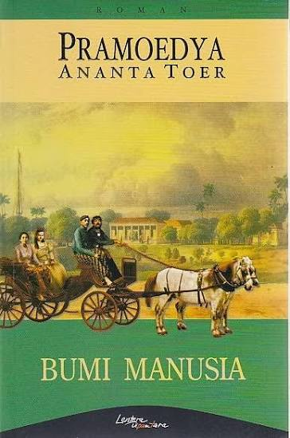

Daftar Koleksi Buku
Berikut daftar buku yang tersedia di perpustakaan. Pilih judul untuk melihat detail buku.
| No | Sampul | Judul | Penulis | Tanggal Terbit | Lokasi Rak | Aksi |
|---|---|---|---|---|---|---|
| 1 |  |
Laskar Pelangi | Andrea Hirata | Rak B-12, Lantai 2 | Edit | |
| 2 |  |
Bumi Manusia | Pramoedya Ananta Toer | Rak B-14, Lantai 2 | Edit | |
| 3 | Negeri 5 Menara | Ahmad Fuadi | Rak B-15, Lantai 2 | Edit |